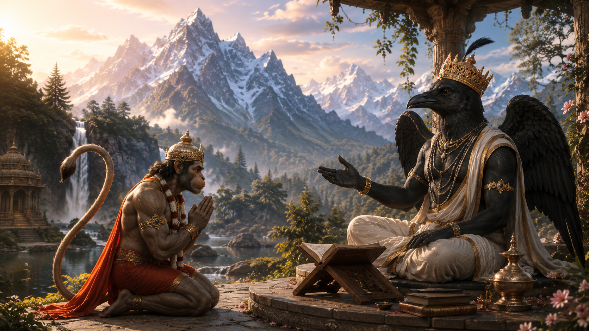
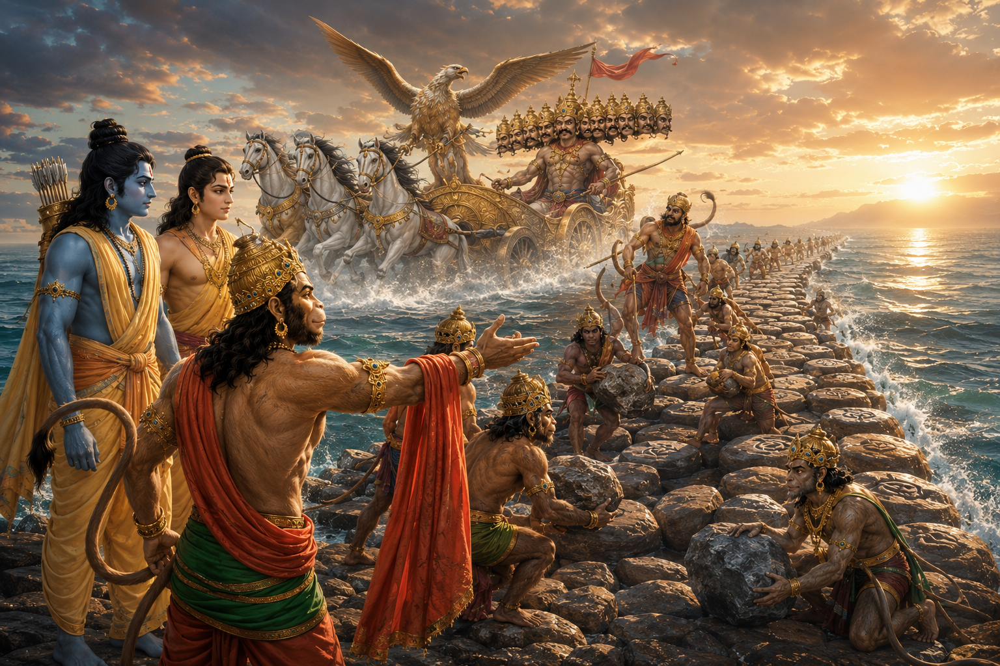

A timeless story from the Katha Upanishad exploring death, the Self, liberation, and the eternal search for truth.
After Lord Rama completed His earthly incarnation and returned to His eternal abode of Saketa, a profound feeling of separation filled the hearts of His devotees.
Although Lord Rama had blessed Hanuman with immortality, declaring that he would remain on Earth for as long as His divine story was recited, Hanuman's heart longed for only one thing:
"May I hear the sacred story of my Lord again and again."
Hanuman knew that the Lord's Name, virtues, deeds, and divine pastimes were no different from the Lord Himself.
Around this time, he remembered a great devotee who lived in a sacred hermitage near Mount Sumeru—the immortal sage Kakabhushundi.

Kakabhushundi was no ordinary sage.
He was among the greatest devotees of Lord Rama and had witnessed the rise and dissolution of countless cosmic ages.
By the grace of the Lord, he possessed extraordinary longevity and profound spiritual wisdom.
He had not seen Lord Rama's divine pastimes only once, but countless times across different cycles of creation.
For this reason, even gods, sages, and perfected beings would visit him to hear the sacred Ramayana.
One day, Hanuman assumed a gentle and subtle form and arrived at Kakabhushundi's hermitage.
The atmosphere was filled with perfect peace.
The melodious chanting of the Vedas echoed through the forest.
Birds sitting upon the trees sang the holy name of Lord Rama.
Every living creature seemed immersed in devotion.
From a distance, Kakabhushundi immediately recognized the beloved servant of Lord Rama.
He rose at once and welcomed Hanuman with immense love.
Smiling with folded hands, he said,
"Today my hermitage has been truly blessed. The greatest servant of Lord Rama has come here."
Hanuman respectfully bowed before the sage and replied,
"Revered Master, I have not come seeking honor. My heart longs for only one blessing—that I may hear the sacred story of Lord Rama from your holy lips."
Closing his eyes in meditation upon Lord Rama, Kakabhushundi began narrating the eternal Ramayana.
He described the Lord's divine descent upon Earth, the glory of Ayodhya, His childhood pastimes, His journey with Sage Vishvamitra, the beauty of Mithila, the marriage of Rama and Sita, the exile, the devotion of Nishadraj, Shabari's unwavering love, the alliance with Sugriva, the victory over Lanka, and finally the establishment of Rama Rajya.

As Hanuman listened, his heart overflowed with devotion.
At times he smiled with joy.
At other moments, tears of divine love flowed from his eyes.
Whenever Kakabhushundi described the crossing of the ocean, the search for Sita, the Ashoka Grove, or the burning of Lanka, Hanuman quietly lowered his head in humility.
He never felt pride in any of his own achievements.
Again and again he would say,
"None of this was accomplished by me. Everything became possible only through the grace of my Lord, Sri Rama."
Kakabhushundi smiled gently and replied,
"And that is the true mark of a devotee. The one who attributes everything to the Lord's grace receives His greatest blessings."

The narration continued for many days.
The entire hermitage remained immersed in an atmosphere of devotion.
Sometimes Hanuman would become absorbed in deep meditation.
At other times he would softly repeat the holy name,
Sri Rama
Kakabhushundi then said,
"The Ramayana is the living form of the Lord Himself. Wherever the story of Rama is lovingly recited, Lord Rama, Mother Sita, Lakshmana—and you, Hanuman—are always present."
Hanuman humbly replied,
"As long as even a single soul chants the name of Sri Rama in this world, I shall surely remain beside them. The Ramayana is the very life of my existence."

The meeting between Hanuman and Kakabhushundi teaches that the thirst to hear the Lord's glories never ends, no matter how advanced a devotee may become.
Even Hanuman—the eternal servant of Lord Rama and the direct witness to His earthly pastimes—joyfully sat as a humble listener before another devotee.
For this reason, saints often say:
"The more one drinks the nectar of the Ramayana, the greater one's longing becomes—for the glory of the Lord is infinite, and so is His divine story."
The meeting between Hanuman and Kakabhushundi is firmly rooted in the devotional tradition surrounding the Ramcharitmanas (Uttara Kanda), particularly the teachings connected with the Kakabhushundi–Garuda dialogue.
The detailed narrative presented here—where Hanuman personally visits Kakabhushundi's hermitage after Lord Rama's departure and listens to the Ramayana over several days—is a traditional devotional retelling that expands upon these scriptural themes rather than a continuous episode narrated verbatim in a single scripture.
Ramcharitmanas (Uttara Kanda)
Adhyatma Ramayana
Kakabhushundi–Garuda Dialogue (Traditional Ramayana Tradition)
This retelling is based on the devotional traditions surrounding Kakabhushundi and Hanuman and is presented in a continuous narrative style for modern readers.